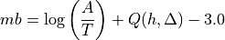

mb¶
Body wave magnitude at teleseismic distances
Description¶
mb is the standard body-wave magnitude. Compare also with the mB magnitude.
Amplitude¶
mb is defined on the amplitude of the first few cycles of the P-wave, typically a time window of 20 s - 30 s. Only the first few cycles are used to minimize the effects of radiation pattern and depth phases, which result in complicate waveform signatures. In SeisComP mb amplitudes are measured on vertical-component displacement seismograms in a 30 s time window after simulation of a WWSSN_SP short-period seismometer. Amplitudes are used from stations with epicentral distances between 5° and 105° (configurable). The methods for measuring amplitudes are configurable in the global bindings.
Station Magnitude¶
The general formula is

with A as the displacement amplitude in micrometers, T as the dominant period of the signal in seconds, Q as a correction term for depth and distance. mb is usually determined at periods around 1s in adaptation to the use of the World-Wide Standard Seismograph Network (WWSSN) short-period stations. A scatter in the order of +/- 0.3 for the station magnitudes is usual. Typically, mb is determined for stations with distances larger than 5° to have a distinct direct P-wave phase. A correction term for the distance has to be determined empirically, which is quite complicate for distances smaller than 20°. This reflects the complexity of the body waves that traverse only in the upper mantle. mb saturates at about magnitude 5.5 to 6.0 because the maximum amplitudes of larger earthquakes occur at lower frequencies than the frequency range between 0.7 Hz - 2 Hz used for the magnitude calculation.
Amplitude unit in SeisComP: nanometers (nm)
Time window: 30 s
Default distance range: 5 - 105 deg, configurable:
magnitudes.mb.minDist,magnitudes.mb.maxDistDepth range: no limitation, for depth < 0 km, depth = 0 km is assumed
Note
In 2013 the IASPEI commission (IASPEI [43]) recommended a minimum distance of
20 deg. However, scautoloc requires mb amplitudes by default for
considering a pick.
For maintaining consistency, 5 deg is therefore kept as the default
for magnitudes.mb.minDist.
Network magnitude¶
By default, the trimmed mean is calculated from the station magnitudes to form the network magnitude. Outliers beyond the outer 12.5% percentiles are removed before forming the mean.
Configuration¶
Adjust the configurable parameters in global bindings in the mB section or use
global.cfg
as in MLv. Add mb to the list of computed amplitudes and magnitudes
in the configuration of
scamp and scmag and in scesv or scolv/scesv
for visibility.